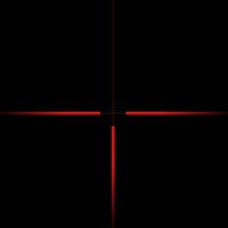

You
may use this files for your personal use only. Any altering or distributing
of the files or directly linking to the files is forbidden. If you find anything
useful then please write something in the
guestbook.
The
models are taken from the web and the "we R 1337 h4x0rz" .diz and
.nfo files were removed.
Some
scripting ideas are 'borrowed' from other people but underwent heavy rewriting.
All sprites are built from scratch.
If
you experience problems, mail to aha@planet-kif.de.
cheat counter-measures
there are two
'invisible' models in ...\cstrike\models and people can (and do) change their
model to one of them to be invisible in-game.
download this spiked model and copy
it to ...\cstrike\models\oranget.mdl and ...\cstrike\models\arcticoranget.mdl.
you may backup the original files to restore them as soon as the cheat is blocked
and the changed models are detected as cheat models.
another cheat
is the crash model cheat, based on the same machanism as the invisible cheat.
this will crash YOUR computer because it tries to show 'illegal' models. the
easiest way to counter this cheat is to replace the illegal models with legal
ones. get this archive containing
a appropriate model and a batchfile that replaces the illegal models with the
one in the archive. this will have no negative effect but it is supposed as
cheating, so backup the original files.
sprites
|  |
 |
|
|
sniper
rifle sprite
|
- copy
above file in your ...\cstrike\sprites folder
- replace
in weapon_aug.txt and weapon_sg552.txt the line 'crosshair 320 ...'
with
'crosshair 320 aha_assault_zoom 0 0 255 255'
and the line 'crosshair 640 ...' with
'crosshair 640 aha_assault_zoom 0 0 255 255'.
|
- copy
above file in your ...\cstrike\sprites folder
- replace
in weapon_XXX.txt (where XXX is awp, g3sg1, scout or sg550) the line
'zoom 320 ...' with
'zoom 320 aha_sniper_scope 0 0 255 255'
and the line 'zoom 640 ...' with
'zoom 640 aha_sniper_scope 0 0 255 255'.
if you play on a lamer server, where autoaim is enabled do the same
for 'zoom_autoaim ...'.
|
yes, they are
of different transparency. i
know they are the same right now, but if i change one of them then no user will
have to change any txts...
configs (using complete
rebinding)
download
all of them, unzip it to ...\cstrike and insert '-zone 4096' in your counter-strike
startup parameters. when your game starts, type 'aha' in the console to activate
the scripts. no existing scripts are affected, because all 'variables' start
with aha_ ...
logos
as you might know
there is a possibility to spray colored logos. here
is a manual of how to make colored logos yourself and below is a collection
of my logos. you can download the last two and the second one without my name
on it.
{kind=link}
{kind=link}
{kind=link}